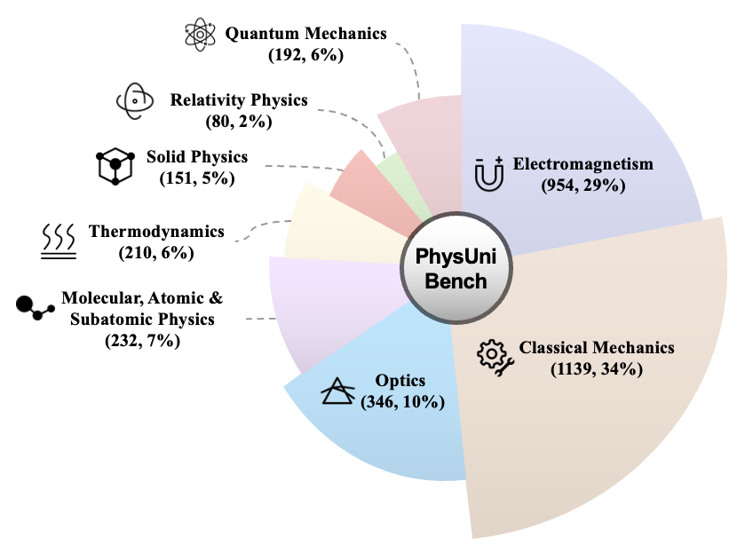

PhysUniBench is a large-scale, multimodal benchmark specifically designed to evaluate the advanced reasoning capabilities of MLLMs on undergraduate-level physics problems. It aims to fill a critical gap in current benchmark ecosystems by offering a challenging, diverse, and diagnostic dataset that reflects the complexity and multimodal nature of real-world scientific problem solving.
Unlike prior benchmarks that focus on text-only math or physics tasks, PhysUniBench emphasizes multimodal scientific reasoning: all questions are paired with visual diagrams, requiring models to integrate textual and visual information to arrive at correct answers. This makes PhysUniBench uniquely suited to test the limits of current MLLMs in performing concept-rich, symbol-heavy, and context-dependent reasoning.
The benchmark comprises a total of 3,304 problems, divided into:
- 2,057 open-ended questions (QA format), requiring free-form answers that test the model's generation and justification capabilities.
- 1,247 multiple-choice questions (MCQ format), constructed by converting especially difficult QA items into single-choice questions with model-generated distractors.
PhysUniBench spans 8 major subfields of university physics, including:
(1) Electromagnetism and Electrodynamics;
(2) Classical Mechanics;
(3) Optics;
(4) Atomic, Molecular, and Subatomic Physics;
(5) Relativity;
(6) Solid-State Physics and Measurement;
(7) Thermodynamics;
(8) Quantum Mechanics.

Figure : Distribution of PhysUniBench
The problems in PhysUniBench are meticulously curated from resources aligned with undergraduate physics curricula. It encompasses a wide range of topics, covering eight major subfields to facilitate a broad evaluation of a model's physics knowledge and reasoning skills. A detailed breakdown of the problem distribution across these sub-disciplines is provided in Figure 1.
To ensure a meaningful and discriminative evaluation, all problems in PhysUniBench are annotated with a difficulty level from 1 to 5, calibrated based on the performance of a strong baseline MLLM (Qwen2.5-VL-72B) through a 16-sample roll-out protocol. Problems that were trivially solved by the model were filtered out to raise the difficulty floor.